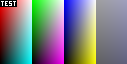
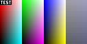
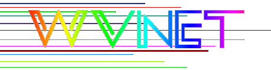

The image below is a 4 bit BMP.
The image below is an 8 bit BMP.
The image below is a 16 bit BMP.
The image below is a 24 bit BMP.

The image below is a 32 bit BMP.
The image below is a 4 bit compressed BMP.
The image below is an 8 bit compressed BMP.
The image below is an 8 bit OS/2 version 1 BMP.
The image below is a 4 bit OS/2 version 2 BMP.
The image below is a 16 bit 555 bitfield BMP.
The image below is a 16 bit 565 bitfield BMP.

The image below is a 32 bit 888 bitfield BMP.
The image below is a 32 bit 888 bitfield version 4 BMP.
The image below is a 32 bit version 5 BMP.
The image below is a 32 bit transparent version 4 BMP.

Note that as of December 2005, Mozilla and Internet Explorer do not support transparent BMP images.
The images (except for the last three and the OS/2 version 2 image) are from Jason Summer's BMP Suite.